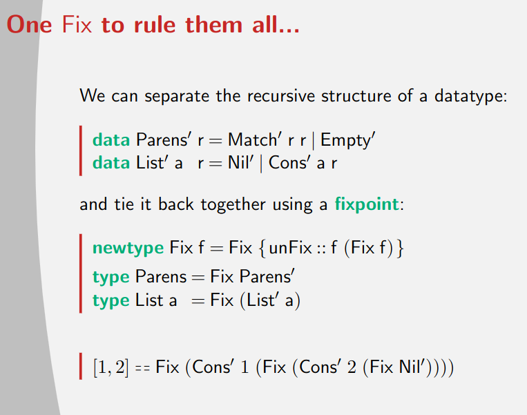
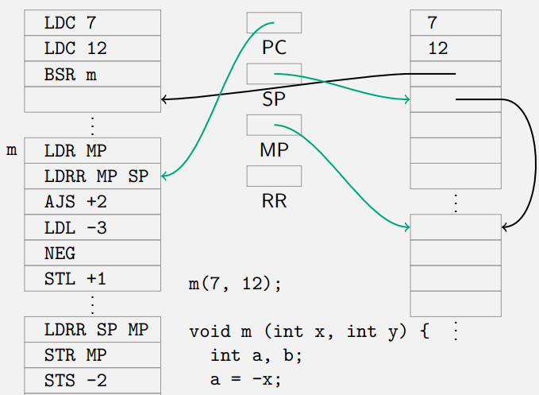
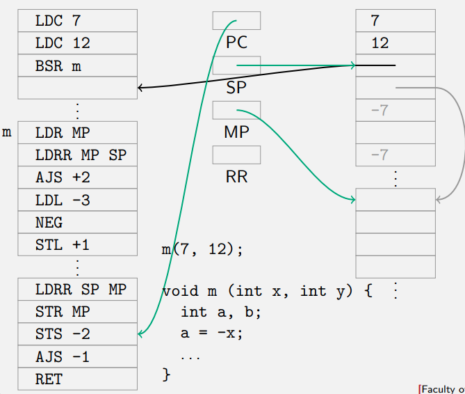

Notes
Table of Contents
- 1. Introduction
- 2. Grammars and parsing
- 3. Parser Combinators
- 3.1. Parser data type
- 3.2. Actual parse data type is slightly different
- 3.3. Implementing <*> and <$>
- 3.4. Examples <*> and <$>
- 3.5. Guard
- 3.6. Choice: <|>
- 3.7. Longest
- 3.8. <$ <* and *>
- 3.9. succeed and epsilon
- 3.10. empty
- 3.11. satisfy and symbol
- 3.12. Biased choice: <<|>
- 3.13. Bind: >>=
- 3.14. do notation
- 3.15. Applicative functors and monads
- 3.16. option
- 3.17. many, some, listOf and greedy
- 3.18. chainl and chainr
- 4. Parser design
- 5. Regular Expressions
- 6. Finite State Machines
- 7. Folding
- 8. Simple stack machine
- 8.1. Documentation
- 8.2. Architecture
- 8.3. Instructions
- 8.3.1.
LDC- load constant - 8.3.2.
LDR- load from register - 8.3.3.
LDL- loal local - 8.3.4.
LDS- load from stack - 8.3.5.
LDLA- load local adress - 8.3.6.
LDA- load via adress - 8.3.7.
LDRR- load register from register - 8.3.8.
NOP- noop - 8.3.9.
HALT- halt program - 8.3.10.
AJS- adjust stack pointer - 8.3.11.
BRA- unconditional branch - 8.3.12.
BSR- branch to subroutine - 8.3.13.
RET- return from subroutine - 8.3.14.
STR- store to register - 8.3.15.
STS- store into stack - 8.3.16.
STL- store local - 8.3.17. Operators
- 8.3.1.
- 8.4. Translating programs
1. Introduction
1.1. Definitions
- A language is a set of “correct” sentences
- A compiler translates one language into another (possibly the same)
Computer science studies information processing.
- We describe and transfer information by means of language
- Information is obtained by assigning meaning to sentences
- The meaning of a sentence is inferred from its structure
- The structure of a sentence is described by means of a grammar
1.2. Course
1.2.1. In this course
- Classes (“difficulty levels”) of languages
- context-free languages
- regular languages
- Describing languages formally, using
- grammars
- finite state automata
- Grammar transformations
- for simplification
- for obtaining more efficient parsers
- Parsing context-free and regular languages, using
- parser combinators
- parser generators
- finite state automata
- How to go from syntax to semantics
1.2.2. Learning goals
- To describe structures (i.e., “formulas”) using grammars;
- To parse, i.e., to recognise (build) such structures in (from) a sequence of symbols;
- To analyse grammars to see whether or not specific properties hold;
- To compose components such as parsers, analysers, and code generators;
- To apply these techniques in the construction of all kinds of programs;
- To explain and prove why certain problems can or cannot be described by means of formalisms such as context-free grammars or finite-state automata.
1.3. Haskell
Haskell is used because many concept from formal language theory have a direct correspondence in Haskell
| Formal languages | Haskell |
|---|---|
| alphabet | datatype |
| sequence | list type |
| sentence/word | a concrete list |
| abstract syntax | datatype |
| grammar | parser |
| grammar transformation | parser transformation |
| parse tree | value of abstract syntax type |
| semantics | fold function, algebra |
1.4. Language and sets
An alphabet is a set of symbols that can be used to form sentences
Given a set A. The set of sequences over A, written A*, is defined as follows:
- The empyt sequence \(\epsilon\) is in \(A^*\)
- If \(a\in A\) and \(z\in A^*\), then \(az\) is in \(A^*\)
Given an alphabat A, a language is a subset of \(A^*\)
We can define such a set in multiple ways:
- By enumerating all elements
- By using a predicate
- \(PAL=\{s\in A^*|s=s^R\}\) is the language of palindromes over A
- By giving an inductive definition
- ε is in PAL,
- a, b, c are in PAL,
- if P is in PAL, then aPa, bPb and cPc are also in PAL
- An inductive definition gives us more structure and makes it easier to explain why a sentence is in the language
1.5. Summary
Alphabet: A finite set of symbols.
Language: A set of words/sentences, i.e., sequences of symbols from the alphabet.
Grammar: A way to define a language inductively by means of rewrite rules.
2. Grammars and parsing
2.1. Grammar
2.1.1. Grammar and productions
A grammar is formalism to describe a language inductively.
Grammer consist of rewrite rules, called productions

- A grammar consists of multiple productions. Productions can be seen as rewrite rules.
- The grammer makes use of auxiliary symbols, called nonterminals, that are not part of the alphabet and hence cannot be part of the final word/sentence
- The symbols from the alphabet are also called terminals.
Grammars can have multiple nonterminal
 One nonterminal in the grammar is called the start symbol
One nonterminal in the grammar is called the start symbol
2.1.2. Restricted grammars/context free
We consider only restricted grammars:
- The left hand side of a production always consists of a single nonterminal
Grammars with this restriction are called context-free
- Not all languages can be generated/described by a grammar.
- Multiple grammars may describe the same language.
- Grammars which generate the same language are equivalent.
- Even fewer languages can be described by a context-free grammar.
- Languages that can be described by a context-free grammar are called context-free languages.
- Context-free languages are relatively easy to deal with algorithmically, and therefore most programming languages are context-free languages
2.1.3. Examples:
natural numbers without leading zeros
- Dig-0 → 1 | 2 | 3 | 4 | 5 | 6 | 7 | 8 | 9
- Nat → 0 | Dig-0 Digs
Integers:
- Sign → + | -
- Int → Sign Nat | Nat or..
- Int → Sign? Nat
Fragment of C#:
- Stat → Var = Expr ;
- | if ( Expr ) Stat else Stat
- | while ( Expr ) Stat
- Expr → Integer
- | Var
- | Expr Op Expr
- Var → Identifier
- Op → Sign | *
2.1.4. Ambiguity
A grammar where every sentence corresponds to a unique parse tree is called unambiguous. If this is not the case the grammar is called ambiguous.
Example ambiguous grammar:
- S → SS
- S → a
Famous ambiguity problem:
- S → if b then S else S
- | if b then S
- | a
consider:
- if b then if b then a else a
Ambiguity is a property of grammars:
- All of these grammars describe the same language
- Not al of these are ambiguous
2.1.5. Grammar transformations
A grammar transformation is a mapping from one grammar to another, such that the generated language remains the same.
Formally: A grammar transformation maps a grammer G to another grammar G’ such that: \(L(G)=L(G')\)
Grammar transformations can help us to transform grammars with undesirable properties (such as ambiguity) into grammars with other (hopefully better) properties.
Most grammar transformations are motivated by facilitating parsing
2.2. Parsing
2.2.1. Parsing problem
Given a grammar G and a string s, the parsing problem is to decide wether or not \(s\in L(G)\)
Furthermore, if \(s\in L(G)\), we want evidence/proof/an explantion why this is the case, usually in the form of a parse tree.
2.2.2. Parse trees in haskell
Consider this grammar:
- S → S-D | D
- D → 0 | 1
Represent nonterminals as datatypes:
data S = Minus S D | SingleDigit D data D = Zero | One
The string 1-0-1 corresponds to the parse tree

In haskell:
Minus (Minus (SingleDigit One) Zero) One
printS :: S → String printS (Minus s d) = printS s ++ "-" ++ printD d printS (SingleDigit d) = printD d printD :: D → String printD Zero = "0" printD One = "1" sample = Minus (Minus (SingleDigit One) Zero) One main = putStrLn (printS sample) -- "1-0-1"
2.3. Summary
Grammar A way to describe a language inductively.
Production A rewrite rule in a grammar.
Context-free The class of grammars/languages we consider.
Nonterminal Auxiliary symbols in a grammar.
Terminal Alphabet symbols in a grammar.
Derivation Successively rewriting from a grammar until we reach a sentence.
Parse tree Tree representation of a derivation.
Ambiguity Multiple parse trees for the same sentence.
Abstract syntax (Haskell) Datatype corresponding to a grammar.
Semantic function Function defined on the abstract syntax.
3. Parser Combinators
3.1. Parser data type
parseDate5 :: Parser Date parseMonth5 :: Parser Month parseDay5 :: Parser Day type Parser a = String -> [(a,String)]
Defining a parser could look like this:
parseDate5 :: Parser Date parseDate5 input = [(Date d m,tail') | (d,tail ) <- parseDay5 input , (m,tail') <- parseMonth5 tail]
This is a repetitive pattern, and quite error prone.
We want it to look like this:
parseDate6 = Date <$> parseDay <*> parseMonth
Notice this is similar to regular haskell function application, <$> -> $ and <*> -> .
<$> :: (Int -> (Month -> Date)) -> Parser Int -> Parser (Month -> Date) <*> :: Parser (Month -> Date) -> Parser Month -> Parser Date
3.2. Actual parse data type is slightly different
The actual type also has what type of symbol we are trying to parse, usually char.
type Parser a c = [c] -> [(a,[c])] (<*>) :: Parser s (a -> b) -> Parser s a -> Parser s b (<|>) :: Parser s a -> Parser s a -> Parser s a (<$>) :: (a -> b) -> Parser a -> Parser b
Using the parser
parse :: Parser s a → [s] → [(a, [s])] -- Examples: parse ints "23,11" == [((23, 11), "")] parse ints "23,11bla" == [((23, 11), "bla")] parse ints "whatever" == []
3.3. Implementing <*> and <$>
<$> :: (a -> b) -> Parser a -> Parser b (f <$> parse) input = [ (f x, tail) | (x, tail) <- parse input]
Examples
((1+) <$> parseNat) "100" == [(101,"")] (map toUpper <$> parseString "hello") "hello world" == [("HELLO"," world")]
Ussually this isn’t used directly, more often then not combined with <*>
<*> :: Parser (a -> b) -> Parser a -> Parser b (pf <*> px) input = [ (f x, tail1) | (f, tail1) <- pf input , (x, tail2) <- px tail1]
3.4. Examples <*> and <$>
Examples:
(,) <$> parseNat <*> parseString " green bottles" $ "42 green bottles hanging on the wall" == [((42," green bottles")," hanging on the wall")] fst <$> ((,) <$> parseNat <*> parseString " green bott " 42 green bottles hanging on the wall" == [(42," hanging on the wall")
3.5. Guard
Only succeed if the result of a parser satisfys a given predicate
guard :: (a -> Bool) -> Parser a -> Parser a guard cond parser input = [ (result, tail) | (result, tail) <- parser input , cond result]
Can also be defined using >>= (see further ahead for more details)
guard :: (a -> Bool) -> Parser a -> Parser a guard cond parser = parser >>= \a -> if cond a then succeed a else empty
3.6. Choice: <|>
Parses using either or both parsers
<|> :: Parser a -> Parser a -> Parser a (p1 <|> p2) input = p1 input ++ p2 input
choice takes a list of parsers and combines them in sequence, returning a list of results.
choice :: [Parser s a] -> Parser s a choice = foldr (<|>) empty
3.7. Longest
This function isn’t actually in library, but could still be a usefull example for a low level parser
longest :: Parser a -> Parser a longest parser input = concat . take 1 . groupBy ((==) `on` length . snd) . sortOn (length . snd) . parser $ input
3.8. <$ <* and *>
All of these are made for ignoring the result of a parser
- Basically only use the argument if the parser succeeds
<$ :: a -> Parser b -> Parser a (x <$ p) = const x <$> p
(<*) :: Parser s a -> Parser s b -> Parser s a p <* q = const <$> p <*> q
(*>) :: Parser s a -> Parser s b -> Parser s b p *> q = flip const <$> p <*> q
3.9. succeed and epsilon
Creates a parser that always results in the same value, doesn’t consume anything from the input string
succeed :: a → Parser s a succeed r xs = [(r,xs)] epsilon :: Parser s () epsilon = succeed ()
3.10. empty
Parser that always fails
empty :: Parser s a empty xs = []
3.11. satisfy and symbol
3.11.1. satify
satisfy takes a predicate and returns a parser that parses a single symbol satisfying that predicate.
satisfy :: (s -> Bool) -> Parser s s satisfy p (x:xs) | p x = [(x,xs)] satisfy _ _ = []
3.11.2. symbol
symbol parses a specific given symbol
symbol :: Eq s => s -> Parser s s symbol x = satisfy (==x)
3.12. Biased choice: <<|>
Biased choice. If the left hand side parser succeeds, the right hand side is not considered.
(<<|>) :: Parser s a → Parser s a → Parser s a (p <<|> q) = \xs → if null (p xs) then q xs else p xs
3.13. Bind: >>=
Monadic bind
(>>=) :: Parser s a -> (a -> Parser s b) -> Parser s b p >>= f = \xs -> [(s, zs) | (r, ys) <- p xs , (s , zs) <- f r ys]
We can use bind to redefine guard
guard :: (a -> Bool) -> Parser a -> Parser a guard cond parser = parser >>= \a -> if cond a then succeed a else empty
Another example of the use of this >>= primitive: we parse 1 number, and then parse that many other numbers:
pSizedList :: Parser Char [Int] pSizedList = natural -- parse the size <* spaces -- discard whitespace >>= \size -> -- use the size to build a new parser for the rest of the input sequence -- collapse a list of parsers into a parser of a list (replicate size -- repeat the following parser `size` times (natural <* spaces)) -- parse a number and discard whitespace
3.14. do notation
Because we have defined the bind operator we can also use the do notation!
guard :: (a -> Bool) -> Parser a -> Parser a guard cond parser = do a <- parser if cond a then return a else empty
Function to parse a number then parse that many lines
parseNLines :: Parser Char [String] parseNLines = do n ← natural _ ← symbol '\n' sequence $ replicate n parseLine where parseLine = many (satisfy (/= '\n')) <* symbol '\n'
3.15. Applicative functors and monads
The operations parsers support are very common, many other types support the same interface(s).
class Functor f where fmap :: (a -> b) -> f a -> f b (<$>) = fmap class Functor f => Applicative f where pure :: a -> f a (<*>) :: f (a -> b) -> f a -> f b class Applicative f => Alternative f where empty :: f a (<|>) :: f a -> f a -> f a class Monad m where (>>=) :: m a -> (a -> m b) -> m b
3.16. option
Parses an optional element. Takes the default value as its second argument.
option :: Parser s a → a → Parser s a option p def = p <|> succeed d
3.17. many, some, listOf and greedy
3.17.1. many
Parses many, i.e., zero or more, occurrences of a given parser.
many :: Parser s a -> Parser s [a] many p = (:) <$> p <*> many p <|> succeed []
3.17.2. some
Parser some, i.e., one or more, occurrences of a given parser.
Also called many1.
some :: Parser s a -> Parser s [a] some p = (:) <$> p <*> many p
3.17.3. listOf
Takes a parser p and a separator parser s. Parses a sequence of p’s that is separated by s’s
listOf :: Parser s a -> Parser s b -> Parser s [a] listOf p s = (:) <$> p <*> many (s *> p)
listOf example: parse digits seperated by `hi`
seperatedByHi :: Parser Char [Char] seperatedByHi = listOf digit (token "hi") main = print $ seperatedByHi "7hi2hi4"
3.17.4. greedy
Greedy variant of many will always parse the most amount it can
greedy :: Parser s a -> Parser s [a] greedy p = (:) <$> p <*> greedy p <<|> succeed []
Example difference between greedy and many:
parse (greedy (symbol 'a')) "aaaaaaabbbbbb"
Meanwhile many also return all the intermediate results
parse (many (symbol 'a')) "aaaaaaabbbbbb"
3.17.5. greedy1
Greedy variant of some:
greedy1 :: Parser s a -> Parser s [a] greedy1 p = (:) <$> p <*> greedy p
3.18. chainl and chainr
For more details see operators
chainl :: Parser s a -> Parser s (a -> a -> a) -> Parser s a chainl p s = foldl (flip ($)) <$> p <*> many (flip <$> s <*> p) chainr :: Parser s a -> Parser s (a -> a -> a) -> Parser s a chainr p s = flip (foldr ($)) <$> many (flip ($) <$> p <*> s) <*> p
4. Parser design
4.1. Grammar transformations
4.1.1. Removing duplicates
A → u | u | v
can be transformed into
A → u | v
Parser:
a = u <|> u <|> v
becomes
a = u <|> v
4.1.2. Left factoring
- Left recursion
A production is called left-recursive if the right hand side starts with the nonterminal of the left hand side.
Example:
A → Az
corresponds to a parser
a = a <*> z
- This parser would loop
- Removing left recursion is essential for a combinator parser
A grammar is called left-recursive if A ⇒+ Az for some nonterminal A of the grammar.
- Removing left recursion
First, split the productions for A into left-recursive and others:
\[A → Ax_1 | Ax_2 | . . . | A x_n\]
\[A → y_1 | y_2 | . . . | y_m \text{ \{-(none of the yi start with A) -\}}\]
Second add a second non-terminal for all the left recursive terms like this:
\[A → y_1Z | y_2Z | . . . | y_mZ\]
\[Z → ε | x_1Z | x_2Z | . . . | x_nZ\]
4.2. Operators
4.2.1. Parsing associative operators
Consider a grammar for simple equations:
E → E O E | Nat
O → + | -
- is not an assosiative operator, it is usually defined as associating to the left
data E = Plus E E | Minus E E | Nat Int
1+2-3+4 should parse as
((Nat 1 ‘Plus‘ Nat 2) ‘Minus‘ Nat 3) ‘Plus‘ Nat 4
This can obtained using:
foldl (flip ($)) (Nat 1) [(‘Plus‘ Nat 2), (‘Minus‘ Nat 3), (‘Plus‘ Nat 4)]
We can write a parser using the chainl function that has the above result
chainl :: Parser s a -> Parser s (a -> a -> a) -> Parser s a chainl p s = foldl (flip ($)) <$> p <*> many (flip <$> s <*> p) e = chainl (Nat <$> natural) o o = Plus <$ symbol '+' <|> Minus <$ symbol '-'
There is also chainr for right associative chains
chainr :: Parser s a -> Parser s (a -> a -> a) -> Parser s a chainr p s = flip (foldr ($)) <$> many (flip ($) <$> p <*> s) <*> p
chainl and chainr can be used for some common occurrences of left recursion.
4.2.2. Parsing associative operators of different priorities
The basic idea is to associate operators of different priorities with different non-terminals.
For each priority level i, we get \[E_i → E_i\ Op_i\ E_{i+1}\ |\ E_{i+1} \text{ (for left-associative operators)}\] or \[E_i → E_{i+1}\ Op_i\ E_{i}\ |\ E_{i+1} \text{ (for right-associative operators)}\] or \[E_i → E_{i+1}\ Op_i\ E_{i+1}\ |\ E_{i+1} \text{ (for non-associative operators)}\]
Applied to \[ E → E + E\] \[ E → E - E\] \[ E → E * E\] \[ E → ( E )\] \[ E → Nat \] we obtain: \[ E_1 → E_1\ Op_1\ E_2\ |\ E_2 \] \[ E_2 → E_2\ Op_2\ E_3\ |\ E_3 \] \[ E_3 → ( E_1 ) | Nat \] \[ Op_1 → + | - \] \[ Op_2 → * \]
Since the abstract syntax tree structure makes the nesting explicit, it typically makes sense to derive the Haskell datatype from the ambiguous grammar:
- same for parantheses
data E = Plus E E | Minus E E | Times E E | Nat
Now we can use chainl and chainr again for each of the levels
e1, e2, e3 :: Parser Char E e1 = chainl e2 op1 e2 = chainl e3 op2 e3 = parenthesised e1 <|> Nat <$> natural op1, op2 :: Parser Char (E -> E -> E) op1 = Plus <$ symbol '+' <|> Minus <$ symbol '-' op2 = Times <$ symbol '*'
4.2.3. A general operator parser
type Op a = (Char, a -> a -> a) gen :: [Op a] -> Parser Char a -> Parser Char a gen ops p = chainl p (choice (map (\(s, c) -> c <$ symbol s) ops))
now the parser looks like this
e1 = gen [(’+’, Plus), (’-’, Minus)] e2 e2 = gen [(’*’, Times)] e3
We could also do without the intermediate levels using a fold
e1 = foldr gen e3 [[(’+’, Plus), (’-’, Minus)], [(’*’, Times)]]
5. Regular Expressions
5.1. A simpler subset of parser combinators
We would like to create a simple subset of parser combinators
- Should work in other languages
- Works in for example a search bar
For this language we only consider char as the input type and string as the output type.
- So it only parses a string to a string
We have to convert the primitive <*> because it is a higher order function.
<*> :: P (a -> b) -> P a -> P b
<,> :: P a -> P b -> P (a, b)
We only want string as a result so we convert <,> to:
<+> :: P String -> P String -> P String
<|> :: R -> R -> R <+> :: R -> R -> R many :: R -> R many1 :: R -> R option :: R -> R symbol :: Char -> R satisfy :: (Char -> Bool) -> R type R = Parser Char String
5.2. Regular Expression
The following expressions in the simplified languages can be converted to regex:
| Haskell | Regular Expression |
|---|---|
| p1 <|> p2 | r1|r2 |
| p1 <+> p2 | r1r2 |
| many p | r* |
| many1 p | r+ |
| option p | r? |
| symbol c | c |
| satisfy isDigit | \d |
| satisfy isWhitespace | \s |
| satisfy (not . isWhitespace) | \S |
| satisfy (`elem` [’a’..’z’]) | [a-z] |
5.3. Limitations of regular expressions/languages
No parsing
matchRegExp "\w+ on (toast|bread)" "beans on toasted potato" == ["beans on toast"]
No recursion
- No matching brackets for example
6. Finite State Machines
We want to create a efficient algorithm for matching regular expressions.
6.1. Moore Machine
Computers are complicated so instead we consider a Moore Machine

Moore machine can also be known as:
- Finite State Machine (FSM)
- Finite State Automaton (FSA)
- Deterministic Finite Automaton (DFA): result is true or false.
- This is what we end up using for regular expression matching
6.1.1. Example: moore machine for lamp
We can model the function of a lamp with three buttons using a moore machine
- It has a button for cold and warm light, we can also turn it on
- The on/off button remembers the last light color
It can be modeled in haskell like this:
As a Moore Machine:
6.1.2. Advantages of Moore Machines
- Easy to use
- Easy to modify
- Easy to verify
- Easy to implement
- Programming languages
- Hardware
- Mathematics
data Moore event memory output = Moore { step :: event -> memory -> memory , genOut :: memory -> output , s0 :: memory} type DFA symbol state = Moore symbol state Bool
See above example for an implementation
A Moore machine can be defined a a 6-tuple \((S,s_0,\Sigma,O,\delta,G)\)
- A finite set of states \(S\)
- A initial state \(s_0\) which is an element of S
- A finite set called the input alphabet \(\Sigma\)
- A finite set called the output alphabet \(O\)
- A transition function \(\delta : S \times \Sigma \rightarrow S\) mapping a state and the input to the next state
- An output function \(G:S\rightarrow O\) mapping each state to the output alphabet
You probably don’t have to learn the above by heart, just an example of how a moore machine can be implemented
6.1.3. Running Moore Machines
runMoore :: Moore inp state out -> [inp] -> state runMoore (Moore step _ s0) = foldr step s0 runDFA :: DFA symbol state -> [symbol] -> state runDFA = runMoore matchesDFA :: DFA symbol state -> [symbol] -> Bool matchesDFA dfa = genOutput dfa . runDFA dfa
6.2. Moore Machines for RegExp Matching
6.2.1. Examples
An example Moore Machine for the regular expression a*aaaba*
Another example with expression (0b)?(0|1)+, which matches a binary number such as 0b001 or 100101

6.2.2. Compiling Regular Expressions to DFA
Not all of regular expressions have a direct and easy translation to DFA, this is why we end up using NFAε
- Later we convert the NFAε back to DFA, i know somewhat confusing, but its easier that way.
c

\d

[x-z]

r1r2
- Every succes state of r1 should be linked to the beginning of r2
r1|r2
- this one is quite difficult, because the two expressions can overlap
- in general they should just be combined, making sure the overlapping states are also combined
- DFA has to be deterministic

The following aren’t possible using DFA
r+r*r?
To match these we have to use a nondeterministic finite automaton
6.2.3. Regex to Non Deterministic Finite Automaton (NFA)
We opt to use NFAε instead of DFA for regular expression matching
- A lot easier to create
r+

r*

r?

r1|r2

r1r2
All other expression are the same as DFA
6.2.4. Running NFAε
runNFAε :: NFAε symbol state -> [symbol] -> Set state runNFAε (NFAε step εsteps genOut s0) = foldr (reachable εsteps (s0 nfa)) (\symbol -> Set.unions . Set.map (reachable εsteps . step nfa symbol)) reachable :: Set (state,state) -> state -> Set state -- was left as an exercise, should be pretty easy with breadth first search reachable = undefined
6.2.5. Performance of the NFA regex
If n = length input and m = length regexp, then…
- \(O(nm)\) time
Best know algorithm (2009):
- \(O(n)\) space
- \(O(nm\frac{\log \log n}{\log^{\frac 3 2}n}+n+m)\) time
6.2.6. Converting NFAε to DFA
Basically just create a DFA where the state variable is a set of state
The implementation is somewhat similar to runNFA𝜀
runNFAε :: NFAε sy st -> [sy] -> Set st runDFA :: DFA sy (Set st) -> [sy] -> Set st runNFAε = runDFA . n2d n2d :: NFAε sy st -> DFA sy (Set st) n2d (NFAε step εsteps genOut s0) = Moore { s0 = reachable εsteps (s0 nfa) -- :: Set state , step = sy -> Set.unions . Set.map (reachable εsteps . step nfa sy) -- :: symbol → Set state → Set state , genOut = any genOut} -- :: Set state -> Bool
7. Folding
A compiler roughly has the folowing phases
- Lexing and parsing
- Analysis and type checking
- Desugaring
- Optimization
- Code generation
Abstract syntax trees play a central role:
- Some phases build AST’s (parsing)
- Most phases traverse AST’s (analysis, type checking, code generation)
- Some phases traverse one AST and build another (desugaring)
We use folding to systematically traverse an AST
7.1. List folding
Most common functions over lists can be expressed as folds
foldr :: (a -> r -> r) -> r -> [a] -> r foldr v [] = v foldr f v (x : xs) = f x (foldr f v xs) sum = foldr (+) 0 length = foldr (\r -> 1 + r) 0
We can pack the arguments to foldr into a single one, which we call list algebra
type ListAlgebra a r = (r, a → r → r) foldr :: ListAlgebra a r → [a] → r foldr (v, ) [] = v foldr (v, f) (x : xs) = f x (foldr (v, f) xs)
For example we can express map and filter as a list algebra
mapAlg :: (a->b) -> ListAlgebra a [b] mapAlg f = ([], \a bs -> f a : bs) filterAlg :: (a -> Bool) -> ListAlgebra a [a] filterAlg f = ([], \x xs -> if f x then x : xs else xs)
7.2. Matched parentheses
Consider a grammer with corresponding data type
- \(S\rightarrow (S)S|\epsilon\)
data Parens = Match Parens Parens | Empty
Consider two functions:
- One counts the number of pairs
- One gets the maximal nesting depth
count :: Parens -> Int count (Match p1 p2) = (count p1 + 1) + count p2 count Empty = 0 depth :: Parens -> Int depth (Match p1 p2) = (depth p1 + 1) `max` depth p2 depth Empty = 0
Both these functions have the following structure:
f :: Parens -> ... f (Match p1 p2) = ... (f p1) (f p2) f Empty = ...
We can define a fold algebra like this
type ParensAlgebra r = (r -> r -> r, -- match r) -- empty foldParens :: ParensAlgebra r -> Parens -> r foldParens (match, empty) = f where f (Match p1 p2) = match (f p1) (f p2) f Empty = empty
Now we can redefine the functions using a fold:
countAlgebra :: ParensAlgebra Int countAlgebra = (\c1 c2 -> c1 + c2 + 1, 0) count = foldParens countAlgebra depthAlgebra :: ParensAlgebra Int depthAlgebra = (\d1 d2 -> (d1 + 1) `max` d2, 0) depth = foldParens depthAlgebra printAlgebra :: ParensAlgebra String printAlgebra = (\p1 p2 -> "(" ++ p1 ++ ")" ++ p2, "") print = foldParens printAlgebra
7.3. Arithmetic expressions
Lets take a simple grammar for arithmetic expressions
- \(E → E + E\)
- \(E → - E\)
- \(E → Nat\)
- \(E → ( E )\)
We convert it to the following grammar because of operator associativity
- \(E → E' + E | E'\)
- \(E' → - E'\)
- \(E' → Nat\)
- \(E' → ( E )\)
The haskell data type is based on the orginal grammar
data E = Add E E | Neg E | Num Int
The structures/types of the function reflects the structure of the datatype.
Add :: E -> E -> E Neg :: E -> E Num :: Int -> E type EAlgebra r = (r -> r -> r, -- add r -> r, -- neg Int -> r) -- num
With the algebra we define a fold
foldE :: EAlgebra r -> E -> r foldE (add, neg, num) = f where f (Add e1 e2) = add (f e1) (f e2) f (Neg e) = neg (f e) f (Num n) = num n
Using this fold we can create an evaluation function for the expression data type
evalAlgebra :: EAlgebra Int evalAlgebra = ((+), negate, id) eval = foldE evalAlgebra
7.4. Building a fold for any datatype
For a datatype T, we can define a fold function as follows:
- Define an algebra type TAlgebra that is based on all of T’s parameters, plus a result type r.
- The algebra is a tuple containing one component per constructor function
- You could also use the record syntax, to give each component a name
- The types of the components are like the types of the constructor functions, but all occurrences of T are replaced with r, the result type.
- The fold function is defined by traversing the data structure, replacing constructors with their corresponding algebra components, and recursing where required.
Every datatype has an identity algebra, which arises by using the constructors as components of the algebra.
7.4.1. Trees example
data Tree a = Leaf a | Node (Tree a) (Tree a) Leaf :: a -> Tree a Node :: Tree a -> Tree a -> Tree a type TreeAlgebra a r = (a -> r, -- leaf r -> r -> r) -- node foldTree :: TreeAlgebra a r -> Tree a -> r foldTree (leaf, node) = f where f (Leaf x) = leaf x f (Node l r) = node (f l) (f r)
sizeAlgebra :: TreeAlgebra a Int sizeAlgebra = (const 1, (+)) sumAlgebra :: TreeAlgebra Int Int sumAlgebra = (id, (+)) inorderAlgebra :: TreeAlgebra a [a] inorderAlgebra = ((:[]), ++) reverseAlgebra :: TreeAlgebra a (Tree a) reverseAlgebra = (Leaf, flip Node) idAlgebra :: TreeAlgebra a (Tree a) idAlgebra = (Leaf, Node)
7.5. TODO Fix
Dit leek me niet super nuttig, misschien later samenvatten.
Het is een manier om nog verder te abstracten op de algemene structuur van folds enzo 
8. Simple stack machine
8.1. Documentation
A lot more detailed documentation can be found on the SSM page:
8.2. Architecture
The simple stack machine is a virtual machine that executes programs consisting of assembly language instructions
The program is a list of instructions with arguments, stored in a continuous block of memory.
A stack is used to store the current state of execution
There are eight registers, four with a special name:
- program counter (PC)
- stack pointer (SP)
- mark pointer (MP)
- return register (RR)
A step in the execution interprets the instruction pointed to by the program counter.
Depending on the instruction, the contents of the stack and registers are modified.
8.3. Instructions
8.3.1. LDC - load constant
Pushes the inline constant on the stack.
8.3.2. LDR - load from register
Pushes a value from a register onto the stack.
8.3.3. LDL - loal local
Pushes a value relative to the markpointer register.
Example:
Before:
after

8.3.4. LDS - load from stack
Pushes a value relative to the top of the stack.
example:
before:

after:
8.3.5. LDLA - load local adress
Pushes the address of a value relative to the markpointer.
There seems to be a mistake in the example of the slides so it is not included here
8.3.6. LDA - load via adress
Pushes the value pointed to by the value at the top of the stack. The pointer value is offset by a constant offset.
Once again slides examples seem to be incorrect
8.3.7. LDRR - load register from register
Copy the content of the second register to the first. Does not affect the stack.
examples:
before:
after:

8.3.8. NOP - noop
No operation, does nothing, goes to next instruction.
8.3.9. HALT - halt program
Machine stops executing instructions.
8.3.10. AJS - adjust stack pointer
Adjusts the stackpointer with fixed amount.
example:
begin:
after:

8.3.11. BRA - unconditional branch
Jumps to the destination. Replaces the PC with the destination address.
8.3.12. BSR - branch to subroutine
Pushes the PC on the stack and jumps to the subroutine.
example:
before:
after:

8.3.13. RET - return from subroutine
Pops a previously pushed PC from the stack and jumps to it.
example:
before:

after:
8.3.14. STR - store to register
Pops a value from the stack and stores it in the specified register. See also ldr.
8.3.15. STS - store into stack
Pops a value from the stack and stores it in a location relative to the top of the stack.
8.3.16. STL - store local
Pops a value from the stack and stores it in a location relative to the markpointer.
8.3.17. Operators
Operators remove stack arguments and put the result back on the stack.
Binary operators:
ADD- AdditionSUB- SubstractionMUL- MultiplicationDIV- DivisionMOD- ModuloAND- Bitwise AndOR- Bitwise OrXOR- Bitwise Exclusive OrEQ- Test for equal, false is encoded as 0, true as 1NE- Test for not equal, false is encoded as 0, true as 1LT- Test for less then, false is encoded as 0, true as 1GT- Test for greater then, false is encoded as 0, true as 1LE- Test for less then or equals, false is encoded as 0, true as 1GE- Test for greater then or equals, false is encoded as 0, true as 1
Unary operators:
NOT- Bitwise complement of the valueNEG- Integer negation


8.4. Translating programs
8.4.1. Translating expressions
- Translating simple expressions
t \[3+4*7+2\]
Can be translated into:
LDC 3 LDC 4 LDC 7 MUL ADD LDC 2 ADD
The translation can be done is haskell:
data Expr = Num Int | Add Expr Expr | Mul Expr Expr | Neg Expr | Eq Expr Expr code :: Expr -> Code code (Num n) = [LDC n] code (Add e1 e2) = code e1 ++ code e2 ++ [ADD] code (Mul e1 e2) = code e1 ++ code e2 ++ [MUL] code (Neg e) = code e ++ [NEG] code (Eq e1 e2) = code e1 ++ code e2 ++ [EQ]
The translation can also be done using a fold with a special algebra:
code x = foldExpr codeAlg x where codeAlg :: ExprAlg Code codeAlg = ExprAlg { num = \n -> [LDC n] , add = \l r -> l ++ r ++ [ADD] , neg = \l -> l ++ [NEG] , eq = \l r -> l ++ r ++ [EQ] }
- Conditionals
Conditionals can be translated like this:
data Expr = ... | If Expr Expr Expr code :: Expr → Code code = . . . code (If c t f) = cc ++ [BRF (st + 2)] ++ ct ++ [BRA sf] ++ cf where cc = code c ct = code t cf = code f st = codeSize ct sf = codeSize cf
Once again it can be expressed using a fold and an algebra:
code x = foldExpr codeAlg x where codeAlg :: ExprAlg Code codeAlg = ExprAlg { num = \n → [LDC n] , add = \l r → l ++ r ++ [ADD] , neg = \l → l ++ [NEG] , eq = \l r → l ++ r ++ [EQ] , if = \c t f → let st = codeSize t sf = codeSize f in c ++ [BRF (st + 2)] ++ t ++ [BRA sf] ++ f }
- Variables and environments
To add variables to the code, we chane the type of the code, to include an environment as an argument.
data Expr = ... | Var String | Let String Expr Expr code x = foldExpr codeAlg x empty where codeAlg :: ExprAlg (Env → Code) codeAlg = ExprAlg { num = \n → \e → [LDC n] , add = \l r → \e → l e ++ r e ++ [ADD] , neg = \l → \e → l e ++ [NEG] , eq = \l r → \e → l e ++ r e ++ [EQ] , if = \c t f → \e → let st = codeSize (t e) sf = codeSize (f e) in c e ++ [BRF (st + 2)] ++ t e ++ [BRA sf] ++ f e , var = \s → \e → [LDL (e ! s)] , leT = \s d b → \e → d e ++ [STL (size e)] ++ b (insert s (size e) e) }
8.4.2. Statements
We extend our lanuage with statements:
data Stmt = Assign String Expr | If Expr Stmt Stmt | While Expr Stmt | Call String [Expr]
For many languages, the following invariants hold:
- Expressions always leave a single result on the stack after evaluation
- Statements do not leave a result on the stack after evaluation
- While loops
Translating while loops can be done in multiple ways: (cc is loop condition, cb is loop body)
- The one on the right is more efficient

data Stmt = . . . | While Expr Stmt code :: Stmt → Code code = ... code (While c b) = [BRA sb] ++ cb ++ cc ++ [BRT (−(sb + sc + 2))] where cc = code c cb = code b sc = codeSize cc sb = codeSize cb
Once again it can be done using an algebra:
data SEAlg s e = SEAlg { add :: e → e → e , num :: Int → e , ifE :: e → e → e → e , ifS :: e → s → s → s , asg :: String → e → s , whl :: e → s → s , cal :: String → [e] → s } foldSE :: SEAlg s e → Statement → s foldSE alg {. .} = fs where fs (IfS c t f) = ifS (fe c) (fs t) (fs f) fe (IfE c t f) = ifE (fe c) (fe t) (fe f) fs (Call v ps) = cal v (map fe ps) fe (Add x y) = add (fe x) (fe y) fe (Num n) = num n code x = foldSE codeAlg x empty where codeAlg :: SEAlg (Env → Code) (Env → Code) codeAlg = SEAlg { asg = λs d e → d e ++ [STL (e ! s)] , ifS = λc t f e → let st = codeSize (t e) sf = codeSize (f e) in c e ++ [BRF (st + 2)] ++ t e ++ [BRA sf] ++ f e , whl = λc b e → let sc = codeSize (c e) sb = codeSize (b e) in [BRA sb] ++ b e ++ c e ++ [BRT (−(sb + sc + 2))] , cal = λm ps e → concatMap ($e) ps ++ [BSR m] , . . .}
- Method translation
- Example method translation with local variables
m(7, 12); void m (int x, int y) { int a, b; a = -x; . . . }
After the call we push the current mark pointer onto the stack

Then we put the contents of the stack pointer into the mark pointer

Then we adjust the stack pointer by +2, to make space for a and b
Then we load 7, the x variables onto the top of the stack, using LDL -3
Then we call
NEGwhich will negate the argument at the top of the stack, 7
Then we call STL +1 to store -7 in the a variable

Then we copy the markpointer register to the stack pointer register, returing the stackpointer to the position it was at the beginning of the function call
Then we pop the old position of the mark pointer and put it into the mark pointer.

Then we call STS -2, which stores the current top of the stack (the return pointer/adress) two positions up relative to the top of the stack. We do this to remove the arguments of the function from the stack.

Then we adjust the stack so the return adress is on top
Then finally, we call the return function